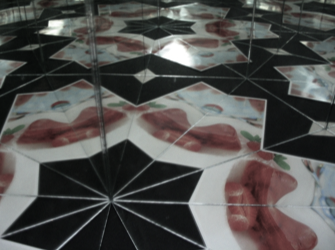
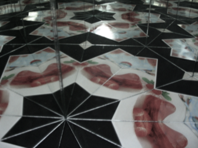
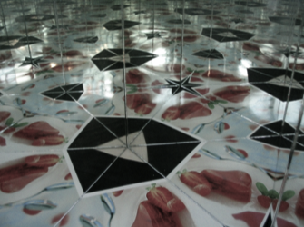
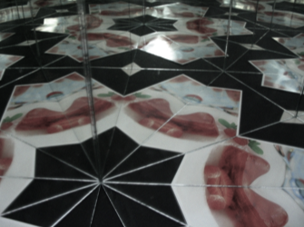

من الممكن ترتيب ثلاث مرايا بحيث تكون الزاوية بين كل زوج منها أحد قواسم 180 درجة. إذا بالإضافة إلى ذلك، كانت مستويات المرايا الثلاث متعامدة مع مستوى الجسم، فهناك إذاً ثلاث إمكانيات لتحقيق ذلك:
(60 درجة، 60 درجة، 60 درجة)، (90 درجة، 45 درجة، 45 درجة) (90 درجة، 60 درجة، 30 درجة)
.يمكن تفسير هذا الترتيب بحقيقة كون مجموع الزوايا في مثلث يساوي 180 درجة. يخلق مشكال من هذا النوع أنماطاً تملأ كافة المستوى بكل سهولة. في المحاكاة على اليمين، يمكنك خلق ومراقبة هذه الإنعكاسات. بتحريك المؤشر المتزحلق الكبير، يمكن التحكم بعدد الإنعكاسات التي تُضاف إلى الصورة. تحريك النقط يسمح التحكم بموقع الأجسام المعكوسة و بالمشكال.
لمعرفة المزيد: يمكن العثور على تفسيرات حول الإنعكاسات والمشكال في برنامج iOnament المعد لأجهزة آيفون وآيبد. يمكنك أيضاً أن تخلق زخرفتك بنفسك.
رابط: www.science-to-touch.com/iornament
|
 
|
صور من مشكال جقيقي.